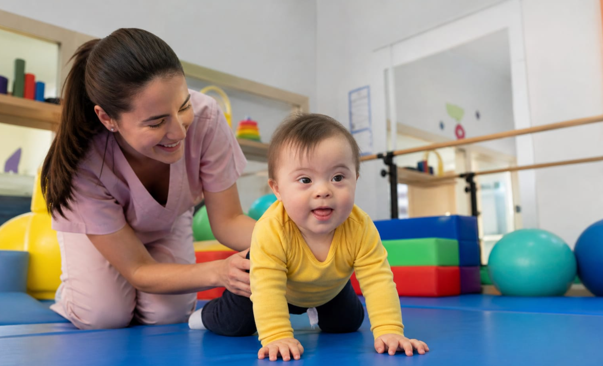
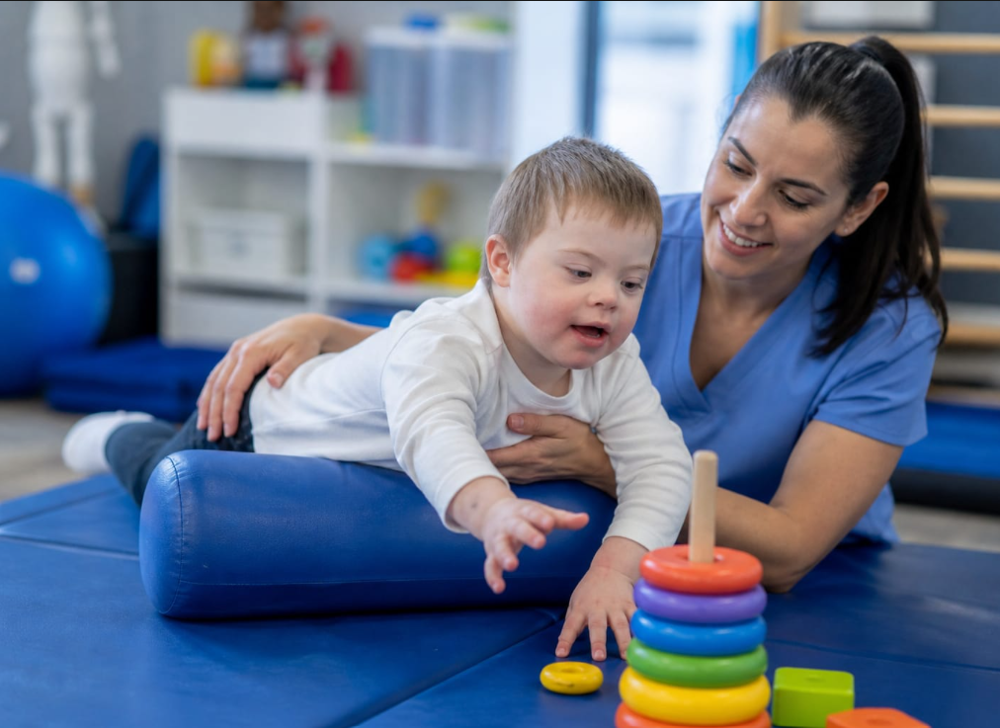

O desenvolvimento motor de crianças com síndrome de Down acontece na mesma sequência que o de outras crianças, porém de forma mais lenta. Isso ocorre principalmente por causa do baixo tônus muscular (hipotonia) e da maior frouxidão dos ligamentos.
Nos primeiros meses de vida, é comum o bebê apresentar-se mais “molinho”, o que pode dificultar movimentos contra a gravidade, como sustentar a cabeça. Por isso, a estimulação precoce é fundamental, incluindo atividades simples como deixar o bebê de bruços (tummy time), que ajuda a fortalecer pescoço e tronco.
A partir do 4º mês, o atraso no desenvolvimento começa a ficar mais evidente. Movimentos como rolar, sentar e engatinhar podem acontecer mais tarde e com maior dificuldade, especialmente por conta da menor força muscular e da instabilidade nas articulações.
No final do primeiro ano, a criança pode começar a tentar sentar sem apoio, engatinhar ou até ficar em pé, mas ainda com bastante instabilidade e necessidade de apoio. Cada conquista exige mais tempo e repetição.

Um ponto muito importante é que a fisioterapia precoce faz toda a diferença. Quando iniciada ainda nos primeiros meses de vida, ela ajuda a acelerar o desenvolvimento, melhora a força, o equilíbrio e contribui para mais independência no futuro.
Em resumo: cada criança tem seu tempo, mas com estímulo adequado e acompanhamento profissional, é possível favorecer o desenvolvimento motor e a qualidade de vida desde os primeiros meses.

Este conteúdo foi produzido por acadêmicos de Fisioterapia com o apoio de imagens e vídeos gerados por inteligência artificial, utilizados para enriquecer a experiência visual e transmitir a mensagem com mais sensibilidade.
Esse texto é apenas para fins informativos. Para orientação ou diagnóstico médico, consulte um profissional.
Referências:
- ● ARSLAN, F. N. et al. Effects of early physical therapy on motor development in children with Down syndrome. North Clin Istanb, v. 9, n. 2, p. 156–161, 2022.
- ● LEI, Z. et al. Effects of physical exercises on balance in children with down syndrome: a systematic review and meta-analysis. BMC Sports Science, Medicine and Rehabilitation, v. 17, n. 165, 2025.
- ● ZOLGHADR, H. et al. The impact of exercise interventions on postural control in individuals with Down syndrome: a systematic review and meta-analysis. BMC Sports Science, Medicine and Rehabilitation, v. 17, n. 35, 2025.